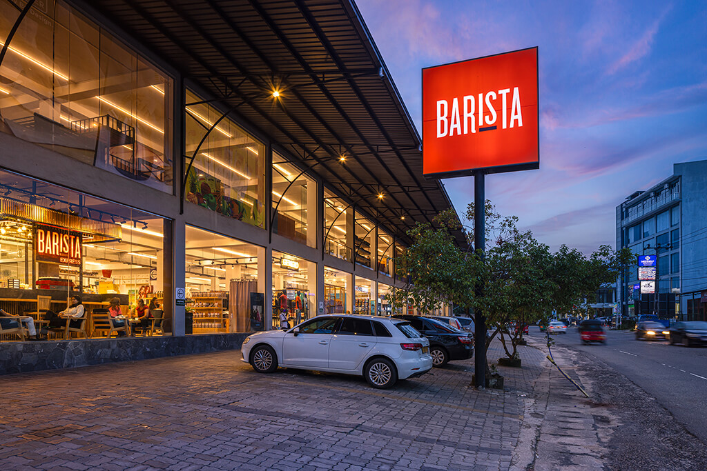

CH. 07 / FIND A CAFE
Your Barista is probably closer than you think.
Search by district, city, or cafe name, then narrow by how you want to visit: dine-in, takeaway, delivery, or a flagship room worth the extra drive.

Standout addresses
Search results
Browse by district, city, or the kind of visit you want.
No cafes matched that combination.
Try a broader district search or remove one of the service filters.
Featured locations
A few cafes worth choosing on purpose.
Still deciding?
Start with a district, then let the rest of the visit come together.
Search by place first, then move into menu planning, directions, and the kind of cafe experience you want today.